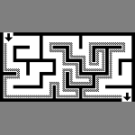
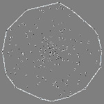
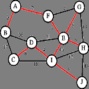
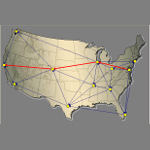

Android Calculator
- An android application performs basic of calculation.
This application uses stack to convert infix to postfix, and postfix to answer.
- Used: Java, Android Development, Stack datastructure.
Maze

- Given a maze, find the entrance and path to exit the maze with wall follower algorithms.
- Used: C programming language
Convex hull

- Solved the convex hull problem by implement Graham Scan algorithm.
- Used: Java, hash map, analyze advanced algorithm and its complexity.
Minimal Spanning Tree

- Given with a connected graph, the code will tell a minimal spanning tree with Kruskal algorithm
- Used: Java, advanced datastructure, analyze advanced algorithm and its complexity.
Shortest Path

- Finding the shortest paths between nodes in a graph using single source
- Used: Java, hash map, heap, analyze advanced algorithm and its complexity.